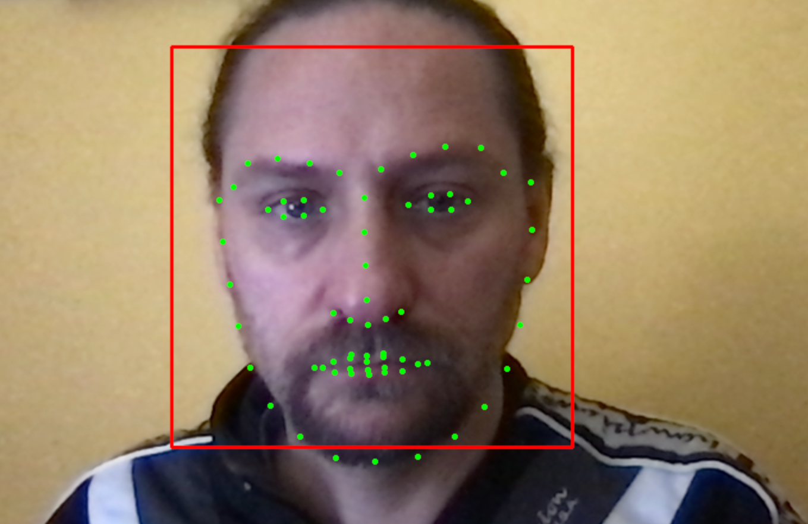
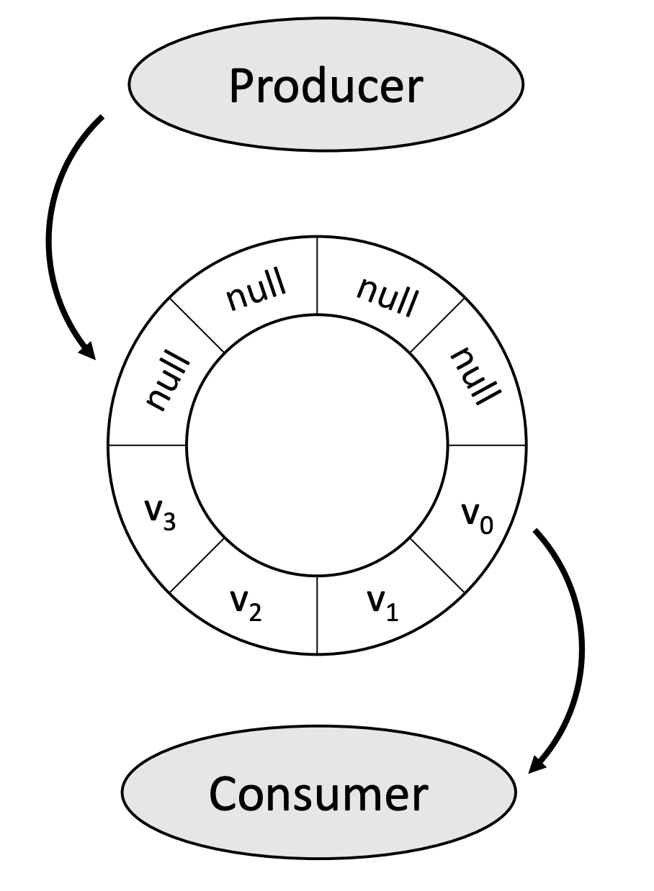
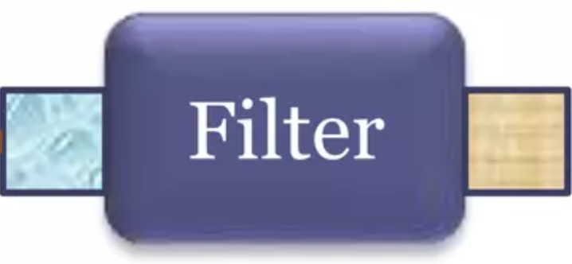
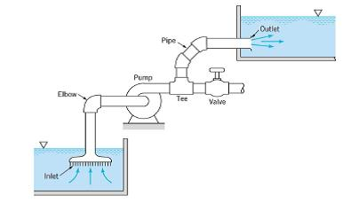
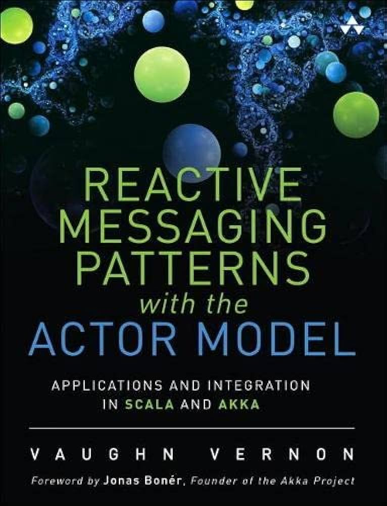
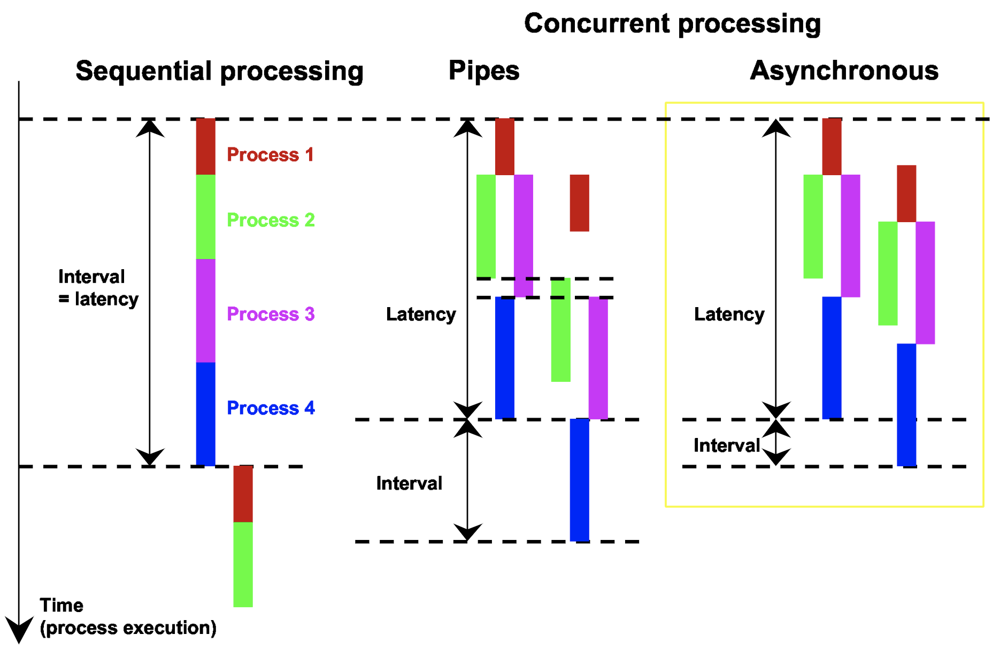
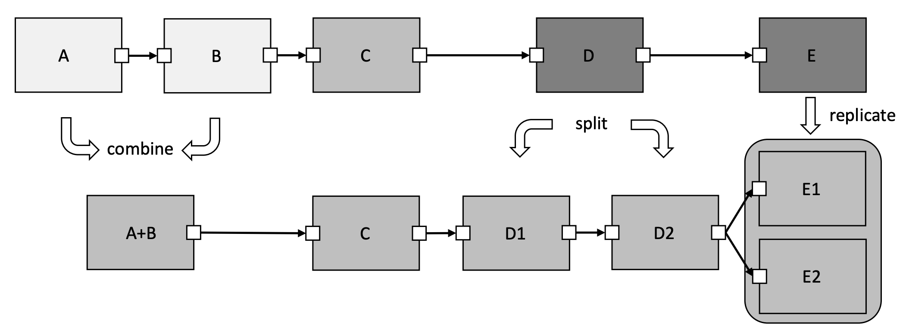
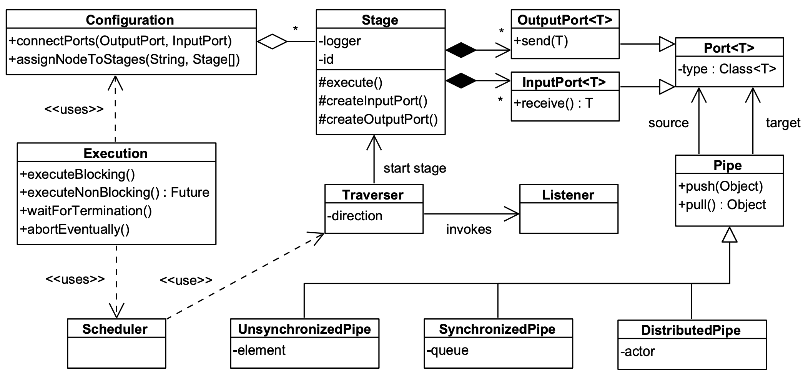

class: center, middle # Architectures for embedded CV ### Considerations from literature and real projects --- name: base layout: true class: base <img src="images/AV.png" width="150" style="float: right"/> --- # The faced problem - Design **computer vision** applications: - running **real-time**: - constrained on **latency/throughput**; - on **embedded devices**: - relying on **local resources**, no cloud access; - **CPU/GPU-intensive**: - composed by **native building blocks**. ??? - Latency VS throughput apps. - Embedded not general. - Mixed devices, a parallelization issue. --- exclude: true # The faced problem - Some examples we faced: - product quality monitoring: - multiple **interacting embedded devices**; - parking lot monitoring: - low **latency constraints** on some tasks; - low **computational power**; - road/driver real-time monitoring from mobile: - **real-time** needs for security; - photo-book generation from mobile; - **high troughput**, progressive processing; --- exclude: true # The faced problem - Structure: - many **inter-dependent steps**; - **multiple** inputs/outputs; - outputs with different **priority**; - outputs with different **computational complexity**; - outputs with different **time constraints**; - configuration time **composeability**; --- # A toy application Detect face landmarks from camera and display them. <pre class="mermaid"> flowchart LR c([Camera]) --> p[Preprocess] --> f[Faces] --> l[Landmarks] --> d>Display] </pre> <br/> .cols[ .col50[.compact[ - **inter-dependent steps**; - **multiple** inputs/outputs; - different **priority**; - different **complexity**; - different **time constraints**; - **composeability**. ]] .col50[ <center>  </center> ] ] <center><small> Code on <a href="https://github.com/ilgabbio/pipes_and_filters">https://github.com/ilgabbio/pipes_and_filters</a> </small></center> ??? - Only toy. - Code online. - **No time** to see all. --- # Base code - We must compose **native algorithms** implementations: - <small>OpenCV, Numpy, DLib, SimpleCV... many frameworks available.</small> - Python used as **orchestrator** of CPU/GPU-intensive code; - Parallelization can be adopted for performances. <pre class="mermaid"> classDiagram namespace Python { class Camera class Preprocess class Faces class Landmarks class Display } namespace Native { class CameraDriver class CvKernel class HaarCascade class LbfModel class GraphicLib } Camera .. CameraDriver Preprocess .. CvKernel Faces .. HaarCascade Landmarks .. LbfModel Display .. GraphicLib </pre> ??? - Do not care about algos here. - Just **composition architecture**. --- # Which architecture? Monolithic, Reactor, Interpreter, ... **Pipes and filters**! <pre class="mermaid"> flowchart LR s(Source) -- pipe --> Filter1 -- pipe --> sk1(Sink1) s -- pipe --> Filter2 -- pipe --> sk2(Sink2) Filter1 -- pipe --> Filter2 </pre> Let's try to answer some questions, such as: .cols[ .col10[ ] .col80[ .compact[.small[ - What are **pipes** and what guarantees must they offer? - What are **filters** and what must offer? - What about the **flow management** and optimization? - How many **threads**/**machines** will the graph spread on? - How can we **assemble** the system (who and how)? - What about **configuration** of the system/hyperparametes? - What about **communication** between components? - How can we **interact** with the running system (in/out)? - What **frameworks** are there and which to choose? ]]] ] ??? - Many styles/patterns. - We used **variants** of p&f. - Widely used. - Supported by literature. - Explicit processing graph. - Do not read, see next. --- # P&F: Pipes for filters interaction .cols[ .col70[ - **Directly**, function calls; - **Across threads**, queues; - **Across machines**, avoid: - unbound latency; - **Transparently**, managed. .compact[ Queues in Python: - lists.. DO NOT USE them! - `queue.Queue`: thread safe.. but slow. - **`collections.deque`**: flexible, pretty fast! ] ] .col30[  ] ] .rowTitle[ Max-size? What if full? ] ??? - **Communication** is central. - **Queues** between threads/processes. - Network **unreliability** is bad. - Better if **abstracted**. - Show queue **benchmark**. --- # P&F: Topology.. which graphs? ??? - Simpler topo - simpler flow management - better performance - Queues SP/SC, MU/MC - Overwrite or block in queues? - Split routes or sends to many? - Join passes or syncs? - Many patterns in stream algebra. -- .cols[ .col20.rowTitle[ Pipelines ] .col60[ <pre class="mermaid"> flowchart LR a --> b --> c --> d </pre> ] .col20.rowTitle[ SP/SC ] ] -- .cols[ .col20.rowTitle[ Trees ] .col60[ <pre class="mermaid"> flowchart LR a --> b --> c --> d b --> e --> f </pre> ] .col20.rowTitle[ SP/MC<br/>Queue or pub/sub? ] ] -- .cols[ .col20.rowTitle[ DAGs ] .col60[ <pre class="mermaid"> flowchart LR a --> b --> c --> e b --> d --> e --> f </pre> ] .col20.rowTitle[ MP/MC<br/>Sync? How? ] ] -- .cols[ .col20.rowTitle[ Arbitrary ] .col60[ <pre class="mermaid"> flowchart LR a --> b --> c --> e e --> d --> b </pre> ] .col20.rowTitle[ Feedback loops ] ] -- .vspace[] .rowTitle[ NOTE: Constructs formalized in *stream algebra* [3]. ] --- # P&F: Filters - **Callables** with arguments: - local processing, eventually on accelerated devices; - well-defined (typed) **ports**. - **Lifecycle** management, **parameterization**: - can be manual, better if done with IoC/CDI. .cols[ .col70[ - User defined **code** that: - consumes some data; - can change its internal state; - produces some results. - Can be **statefull** (better, if stateless). ] .col30[ <br/><br/> ] ] ??? - **Callables** on **devices**: - matters for parallelization. - **Composition** and **lifecycle** explicit. - **Stateless** better than **statefull**. --- # P&F flow management **<big>What drives message flowing through P&Fs?</big>** <center> <br/><br/> What is <i>the pump</i>? </center> ??? - Flowing **schedules** tasks. - Matters in case of **concurrency**. --- # P&F flow: push Example: a (simple) pipeline pattern implementation .cols[ .col50[ ```python class Step(ABC): def push(self, frame: dict | None): # Execute _op and push on next. @abstractmethod def _op(self, frame: dict): pass def close(self): pass def __or__(self, next: Step) -> Step: # Store the next step. ``` ] .hspace[ ] .col50[ <pre class="mermaid"> classDiagram class Runner class Step { push(message | poison-pill) operation(message) close() } Step "next" o--> "0..1" Step Runner "runs" --> Step </pre> ] ] .vspace[] .cols[ .col70[ ```python # The runner pushes the whiteboard into the pipeline. class Runner: def run(self): while not self._must_stop(): self._source.push({"shapes": {}}) # Poison pill is a way to stop: self._source.push(None) ``` ] .col30[ <center> The runner <br> pumps pushing </center> ] ] ??? - Pipeline pattern. - Can use Composite, Observer. --- # P&F flow: pull In Python can be achieved using generators: .cols[ .col60[ ```python def step(step_source): for frame in step_source: process(frame) update(frame) yield frame ``` .vspace[] ```python def source(): # Initialization. while must not stop: yield new whiteboard # Finalization. ``` ] .hspace[ ] .col40[ <pre class="mermaid"> graph TD subgraph step subgraph previous subgraph ... source end end end runner --> |pulls| step </pre> ] ] .cols[ .col60[ ```python # Runned by pulling: for _ in pipeline: pass ``` ] .col40[ <center> The runner <br> pumps pulling </center> ] ] ??? - **Decorator** pattern. - **Generators** in Python. - **Whiteboard** is a messaging pattern. --- # P&F flow: pull-push More often we have a pull-push mix: <center> <pre class="mermaid"> sequenceDiagram participant P as Producer participant R as Runner participant C as Consumer R ->> +P: Pull activate R P -->> -R: message R ->> +C: Push(message) C -->> -R: Consumed deactivate R </pre> Happens in concurrent components using queues as filtes. </center> ??? - Begin of thread: - pulls from pull graph/queue). - End of thread: - pushes to push graph/queue. --- # P&F flow: event-driven - Filters are decoupled, **interacting with events**. - Can be implemented using patterns, e.g.: **observer**. - More decoupling using an **event-bus**: <center> <pre class="mermaid"> sequenceDiagram Filter1 -> Filter2: Indirect communication Note over Filter1, Filter2: Event-bus </pre> </center> .tiny[ <center> Circuits and pyee are popular event management frameworks. </center> ] ??? - Event bus systems can be: - external; - persistent; - configurable; - pluggable. --- # P&F flow: external - Flow and concurrency are managed externally; - Communication is mediated by mailboxes (pipes); - Message processors are the concurrent actors (filters). E.g.: actor systems provide this kind of flow management: <pre class="mermaid"> flowchart LR system((Actor System)) subgraph Actor p([processing]) subgraph Mailbox m1(message\nmessage\n...) end end subgraph a[Another actor] subgraph box[Mailbox] m2(message) end end p --> |sends| m2 system --> |triggers| p </pre> ??? - Filters are **"actors" in general**. - **A system schedules** procesing. - Easier distribution. --- # P&F flow: actor-systems .cols[ .col50[ The system must manage: - isolation - synchronization - scheduling - distribution ] .col50[ The system must be: - composed (configuration) - started (threads/network) - feeded (something pushes) ] ] .cols[ .col50[ ```python class StepActor(ActorBase): def __init__(self, dest): "Needs a reference to the target actor" self._dest = dest def on_receive(self, frame: dict): "Receives messages and sends results" self._dest.tell(process(frame)) ``` .tiny[ Thespian, **Pykka**, *Xoscar*, to name a few. ] ] .col50[ <p style="margin: -40px; margin-left: 50px;">  </p> ] ] ??? - Real actor-systems: - **never used** in embedded (but can). - **Not fitting** the wall the task: - harder to connect; - threading tricky. - Frameworks supporting AsyncIO. - **Xoscar** supports heterogeneous hardware: - **good for AI** distributed processing. --- # P&F flow: timely External flow management with **data generation** tracking: <pre class="mermaid"> flowchart LR Source --> |gen 3| Filter1 --> Filter2 --> |gen 2| Filter3 --> |gen 1| Sink Filter3 --> |gen 1| Filter1 </pre> - Proposed by Microsoft Research in 2013 (Naiad); - supports scaling on multiple threads/nodes; - allows incremental update of results; - reimplemented in Rust and wrapped by *bytewax*. ??? - Data **generation-stamped**. - Filters **aware**. - **timely-dataflow** in Rust; - wrapped by **bytewax**. --- # P&F: Threading/Distribution If algorithms have insufficient parallelization... ...what would you make concurrent in the graph? <center> <br/> <small> <i> Efficient Engineering and Execution of Pipe-and-Filter Architectures </i> </small> </center> ??? - Throughput VS latency. - Latency VS interval. - Interval variance. --- # P&F: Threading/Distribution <pre class="mermaid"> flowchart LR subgraph "thread 1" s(Source) -- pipe --> f1(Filter1) s -- pipe --> f2(Filter2) end subgraph "thread 2" f1 -- pipe --> f3(Filter3) -- pipe --> sk(Sink) f2 -- pipe --> f3 end </pre> - Parallelization on one machine by means of **threads**: - at the **filter** level; - at the **sub-graph** level; - one thread per **graph**. - Less is more, if possible **prevent distribution complexity**: - eventually splitting at the problem level. ??? - **Levels** where happens. - In real-time: - ** NO distribution** complexity/uncertainty. --- # P&F threading: the GIL - Python allows extensions to [release the GIL](https://docs.python.org/3/c-api/init.html#releasing-the-gil-from-extension-code), [with C APIs](https://github.com/python/cpython/blob/d67f947c72af8a215db2fd285e5de9b1e671fde1/Python/ceval_gil.c#L612): ```c PyThreadState *PyEval_SaveThread(void) { PyThreadState *tstate = _PyThreadState_GET(); _PyThreadState_Detach(tstate); return tstate; } ``` - Many packages release the GIL in: - IO blocking/CPU-intensive code; - see: [Numpy](https://github.com/numpy/numpy/blob/6031da18454335b7df95bed6597e95154bbdba2f/numpy/_core/include/numpy/ufuncobject.h#L210), [Scipy](https://scipy-cookbook.readthedocs.io/items/Multithreading.html), [OpenCV](https://github.com/opencv/opencv/blob/6d4f66472e14b29b8e1623859cfebfdc67f677c3/modules/python/src2/cv2.cpp#L55). .cols[ .col60[ <center> <pre class="mermaid"> flowchart LR subgraph "GIL release limit..." Numpy OpenCV end App --> Thread1 --> Numpy--> Task1 App --> Thread2 --> OpenCV--> Task2 </pre> </center> ] .col40[ <br> <center> What about <br> <a href="https://peps.python.org/pep-0703/">PEP703</a>? </center> ] ] ??? - Filters can **really be parallel**. - How to organize their execution? --- # P&F threading: load balancing How to **balance load** between threads? <br/> In **TeeTime** it is proposed to *adaptively transform* the graph: <center> <br/> <small> <i>Efficient Engineering and Execution of Pipe-and-Filter Architectures</i> </small> </center> ??? - **Optimize** the structure: - **preprocessing**; - **adaptively** transforming. - can **compose on devices**. --- # P&F threading: load balancing How to **balance load** between threads? <br/> **EPypes** proposes a framework to *split* the graph in a pipeline: <center> <pre class="mermaid"> flowchart LR subgraph "thread 1" s(Source) --> f1(Filter1) s --> f2(Filter2) --> f3(Filter3) f1 --> f3 end subgraph "thread 2" f3 -- pipe --> f4(Filter4) --> f5(Filter5) --> sk(Sink) end </pre> <small> <i>EPypes: a framework for building event-driven data processing pipelines</i> </small> </center> - Efficient within a graph: direct calls/AsyncIO; - efficient between graphs: SP/SC queues. ??? - One thread per graph. - Minimize queues. - Parallelize devices. - IO-bound in AsyncIO graphs. --- # P&F: Messages along the pipes .cols[ .col50[ Exactly **what needed**: <br> $\Rightarrow$ complex graphs; <br> $\Rightarrow$ no general channel. ] .col50[ ```python @define_block("LandmarksDetector", Input("gray"), Input("faces"), Output("landmarks"), ) def landmarks(gray, faces): ... # Example with Barfi. ``` ] ] .vspace[] .cols[ .col50[ A **general container**: <br> $\Rightarrow$ complex message checking; <br> $\Rightarrow$ memory management. ] .col50[ ```python def landmarks_detector(source): for frame in source: # Input: faces = frame["shapes"]["faces"] gray = frame["gray"] # Output: frame["shapes"]["landmarks"] = ... yield frame ``` ] ] *Configuration* can be done **via IoC** (e.g. with Hydra)... <br> ...or can travel **with messages** (see EPypes). *External notifications* require a **queue and a thread**... <br> ...**answers** & **commands** can travel with the whiteboard. ??? - Exact: - Show p_and_f Barfi example. - Whiteboard per item: - Push example. - Complex communication on the whiteboard. --- # P&F: Structure and assembly - Graph described by the **code**: - **direct** composition of objects/functions; - design **patterns** (observer, pipeline, pub/sub). - Graph described by the **configuration**: - graph representation **data structure**; - **Inversion of Control** (IoC) system description: <br> see *Hydra*, Dependency Injector. - event-based systems connected by **bus configuration**; - **auto-wiring** guided by in/out argument relations: <br> see `epypes_fw.py` and `autowiring.py`. <pre class="mermaid"> flowchart LR conf[[Configuration]] --> Graph1 subgraph Graph1 direction LR a --> b --> c end Graph1 --- pipe --> Graph2 subgraph Graph2 direction LR d --> e --> f end </pre> ??? - Graph in code, in config, reflection. - Show auto-wiring example. - IoC: reusable components: - Auto-composition graphs? - Components can imply requirements. --- # P&F: Structure and assembly A processing graph can be a complex structure: <center> <br/><br/> See the <b>TeeTime framework</b>, Christian Wulf. </center> ??? - Example of explicit graph representation. --- # Thanks for listening .cols[ .col30[ ## Q&A #### Bib ] .col70[ <p class="fancy">(ツ)_/</p> ] ] .bib[ 1. *"Efficient Engineering and Execution of Pipe-and-Filter Architectures"*, M.Sc. Christian Wulf, 2019 1. *"EPypes: a framework for building event-driven data processing pipelines"*, Oleksandr Semeniuta, Petter Falkman, 2019 1. *"A Stream Algebra for Computer Vision Pipelines"*, Mohamed A. Helala, Ken Q. Pu, Faisal Z. Qureshi, 2014 1. *"Naiad: A Timely Dataflow System"*, Derek G. Murray, Frank McSherry, Rebecca Isaacs, Michael Isard, Paul Barham, Martìn Abadi, 2013 1. *"Software Architecture for Computer Vision: Beyond Pipes and Filters"*, Alexandre R.J. François, 2003 ]